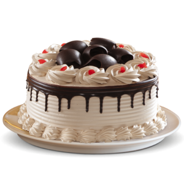
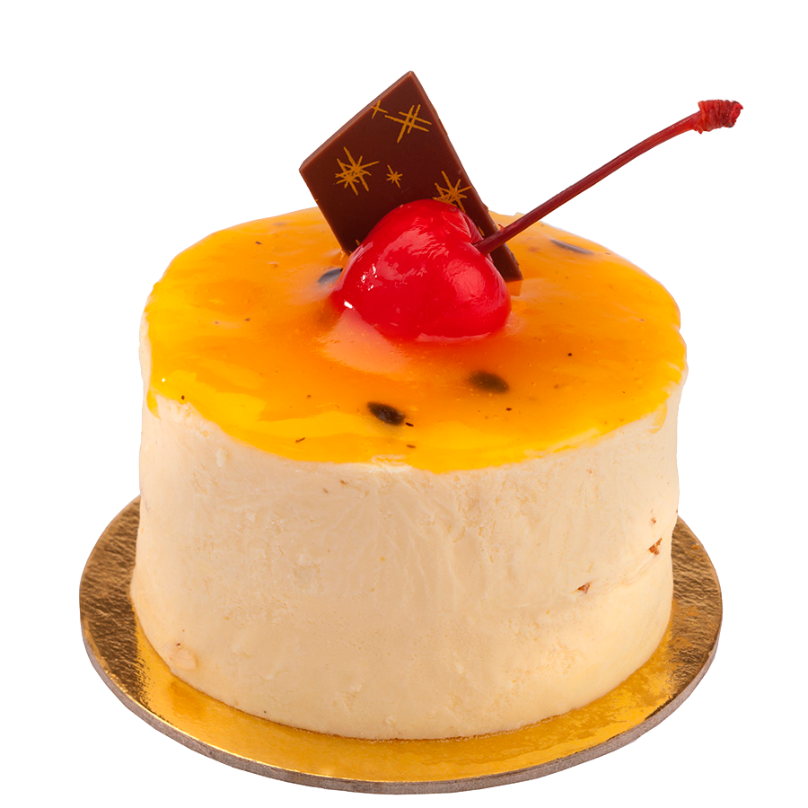
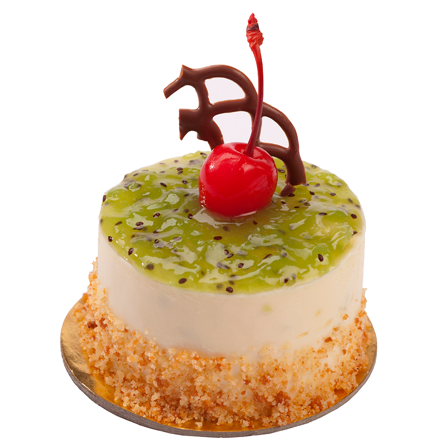

Ver precio
Cake de Chocolate
es un postre muy solicitado para celebrar cualquier ocasión especial sin importar la ocación.

Top Cake
El postre de Kiwi sin horno que comparto esta vez en RecetasGratis es un postre ideal para después. Un hueco para el postre y más si.

Ver precio
Postre de Piña
es un postre muy solicitado para celebrar cualquier ocasión especial, como un cumpleaños o un aniversario de bodas. En genera.

Ver precio
Postre de Kiwi
El postre de Kiwi sin horno que comparto esta vez en RecetasGratis es un postre ideal para después de una buena comida.